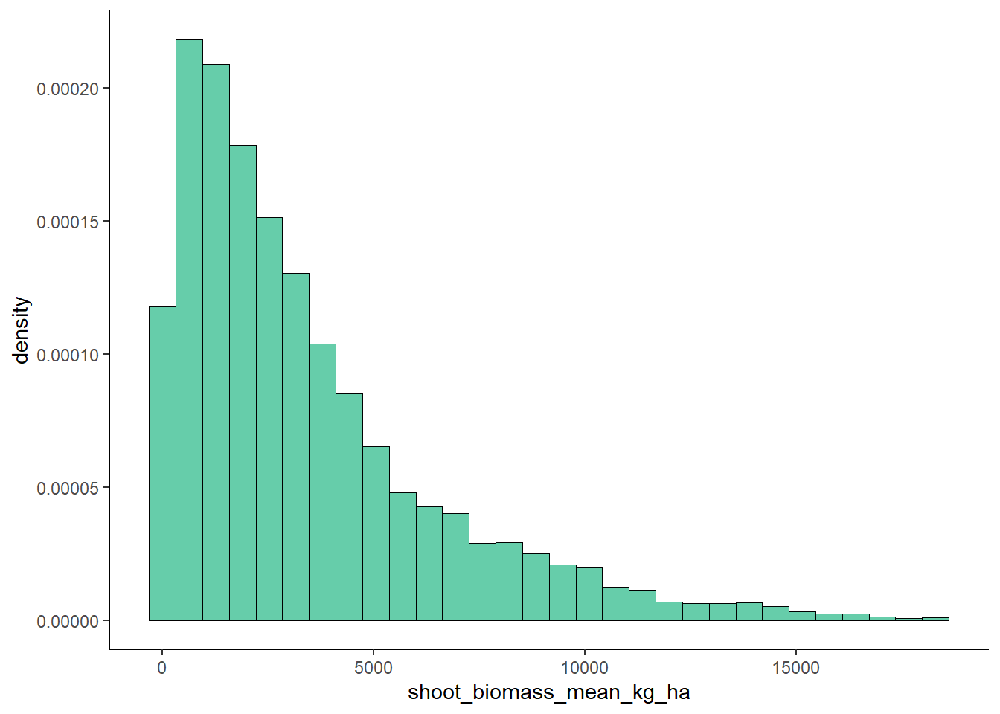
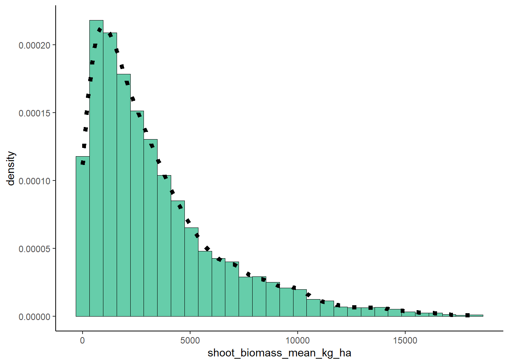
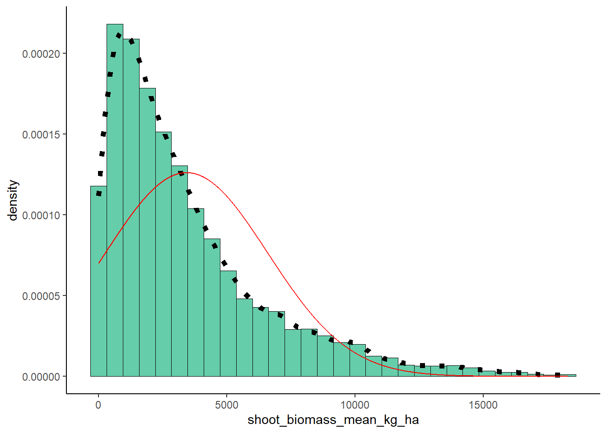
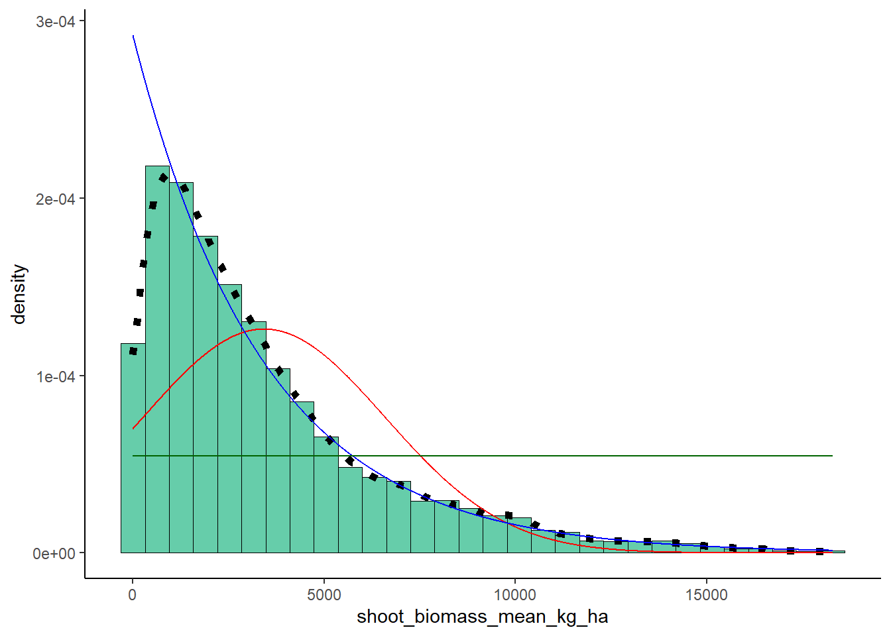

library(ggplot2)
library(MASS)## Warning: package 'MASS' was built under R version 4.4.2##
## Attaching package: 'MASS'## The following object is masked from 'package:dplyr':
##
## select{r} # z <- rnorm(n=3000,mean=0.2) # z <- data.frame(1:3000,z) # names(z) <- list("ID","myVar") # z <- z[z$myVar>0,] # str(z) # summary(z$myVar) #{r} # p1 <- ggplot(data=z, aes(x=myVar, y=..density..)) + # geom_histogram(color="black",fill="darkgoldenrod2",size=0.2) # print(p1) # ```` # # #### Add empiracal density curve #{r}# # #### Get the maximum liklihood parameters for normal distribution # #{r}# # #### Plot the normal probability density on the histogram # #{r}# #{r}library(readr)
ryedat <- read_csv("rye_data.csv")## Rows: 5695 Columns: 27
## ── Column specification ──────────────────────────────────
## Delimiter: ","
## chr (12): site_id, year, rye_planting_date, rye_sampling_date, cultivar, rep...
## dbl (15): study_id, N_rate_fall_kg_N_ha, N_rate_spring_kg_N_ha, shoot_biomas...
##
## ℹ Use `spec()` to retrieve the full column specification for this data.
## ℹ Specify the column types or set `show_col_types = FALSE` to quiet this message.View(ryedat)
ryedat$study_id <- as.factor(ryedat$study_id)
ryedat$site_id <- as.factor(ryedat$site_id)plot <- ggplot(data = ryedat, aes(x = shoot_biomass_mean_kg_ha, y = ..density..)) +
geom_histogram(color="black",fill="aquamarine3",size=0.2) +
theme_classic()## Warning: Using `size` aesthetic for lines was deprecated in
## ggplot2 3.4.0.
## ℹ Please use `linewidth` instead.
## This warning is displayed once every 8 hours.
## Call `lifecycle::last_lifecycle_warnings()` to see where
## this warning was generated.plot## Warning: The dot-dot notation (`..density..`) was deprecated in
## ggplot2 3.4.0.
## ℹ Please use `after_stat(density)` instead.
## This warning is displayed once every 8 hours.
## Call `lifecycle::last_lifecycle_warnings()` to see where
## this warning was generated.## `stat_bin()` using `bins = 30`. Pick better value with
## `binwidth`.
plot <- plot + geom_density(linetype="dotted",size = 2)
plot## `stat_bin()` using `bins = 30`. Pick better value with
## `binwidth`.
normPars <- fitdistr(ryedat$shoot_biomass_mean_kg_ha, "normal")
print(normPars)## mean sd
## 3428.26191 3163.35061
## ( 41.91799) ( 29.64050)str(normPars)## List of 5
## $ estimate: Named num [1:2] 3428 3163
## ..- attr(*, "names")= chr [1:2] "mean" "sd"
## $ sd : Named num [1:2] 41.9 29.6
## ..- attr(*, "names")= chr [1:2] "mean" "sd"
## $ vcov : num [1:2, 1:2] 1757 0 0 879
## ..- attr(*, "dimnames")=List of 2
## .. ..$ : chr [1:2] "mean" "sd"
## .. ..$ : chr [1:2] "mean" "sd"
## $ n : int 5695
## $ loglik : num -53979
## - attr(*, "class")= chr "fitdistr"normPars$estimate["mean"]## mean
## 3428.262#Normal Distribution
meanML <- normPars$estimate["mean"]
sdML <- normPars$estimate["sd"]
xval <- seq(0,max(ryedat$shoot_biomass_mean_kg_ha),len=length(ryedat$shoot_biomass_mean_kg_ha))
stat <- stat_function(aes(x = xval, y = ..y..), fun = dnorm, colour="red", n = length(ryedat$shoot_biomass_mean_kg_ha), args = list(mean = meanML, sd = sdML))
plot + stat## `stat_bin()` using `bins = 30`. Pick better value with
## `binwidth`.
expoPars <- fitdistr(ryedat$shoot_biomass_mean_kg_ha,"exponential")
rateML <- expoPars$estimate["rate"]
stat2 <- stat_function(aes(x = xval, y = ..y..), fun = dexp, colour="blue", n = length(ryedat$shoot_biomass_mean_kg_ha), args = list(rate=rateML))
plot + stat + stat2## `stat_bin()` using `bins = 30`. Pick better value with
## `binwidth`.stat3 <- stat_function(aes(x = xval, y = ..y..), fun = dunif, colour="darkgreen", n = length(ryedat$shoot_biomass_mean_kg_ha), args = list(min=min(ryedat$shoot_biomass_mean_kg_ha), max=max(ryedat$shoot_biomass_mean_kg_ha)))
plot + stat + stat2 + stat3## `stat_bin()` using `bins = 30`. Pick better value with
## `binwidth`.
# gammaPars <- fitdistr(ryedat$shoot_biomass_mean_kg_ha,"gamma")
# shapeML <- gammaPars$estimate["shape"]
# rateML <- gammaPars$estimate["rate"]
# stat4 <- stat_function(aes(x = xval, y = ..y..), fun = dgamma, colour="brown", n = length(ryedat$shoot_biomass_mean_kg_ha), args = # list(shape=shapeML, rate=rateML))
# plot + stat + stat2 + stat3 + stat4